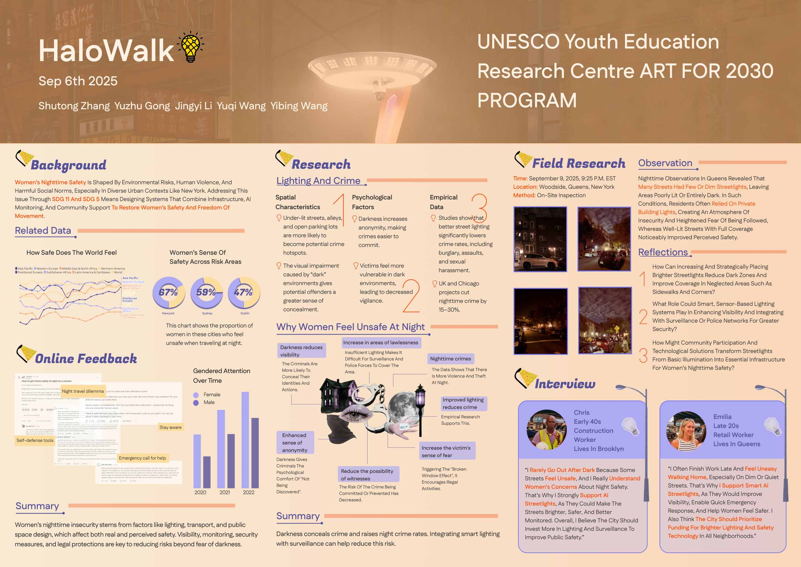
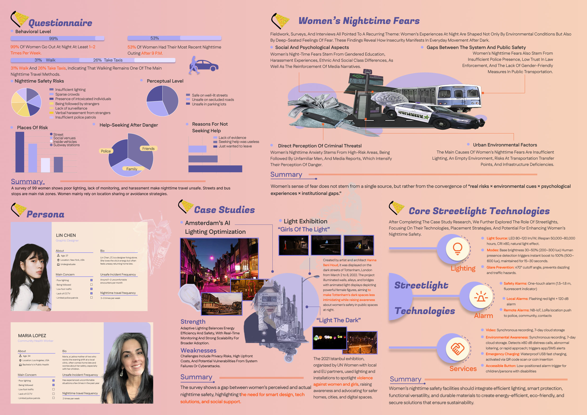
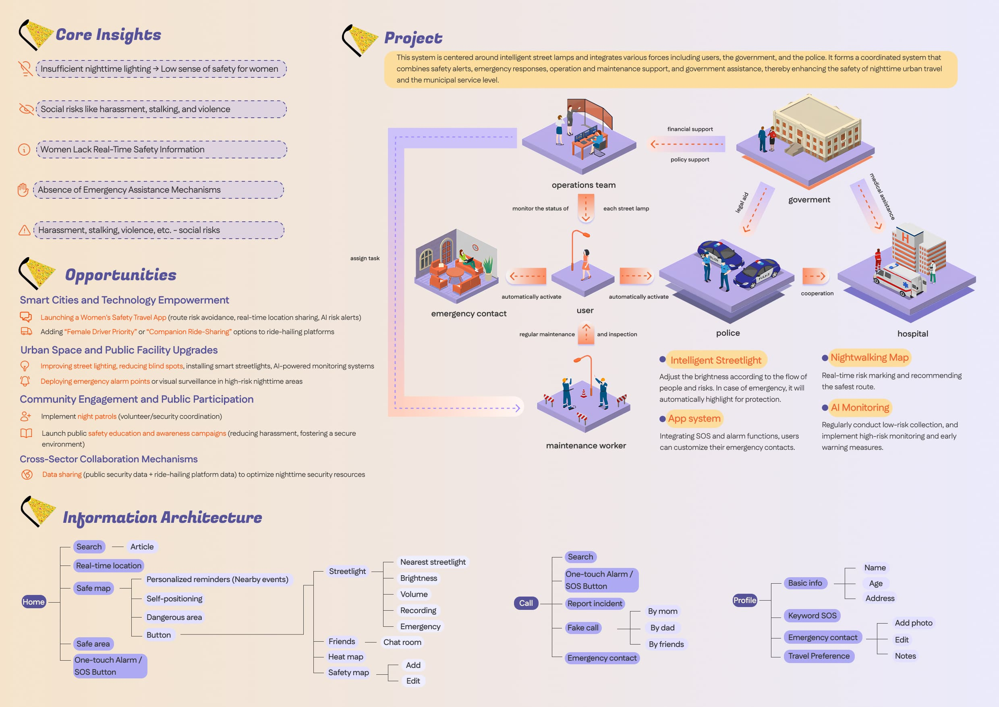
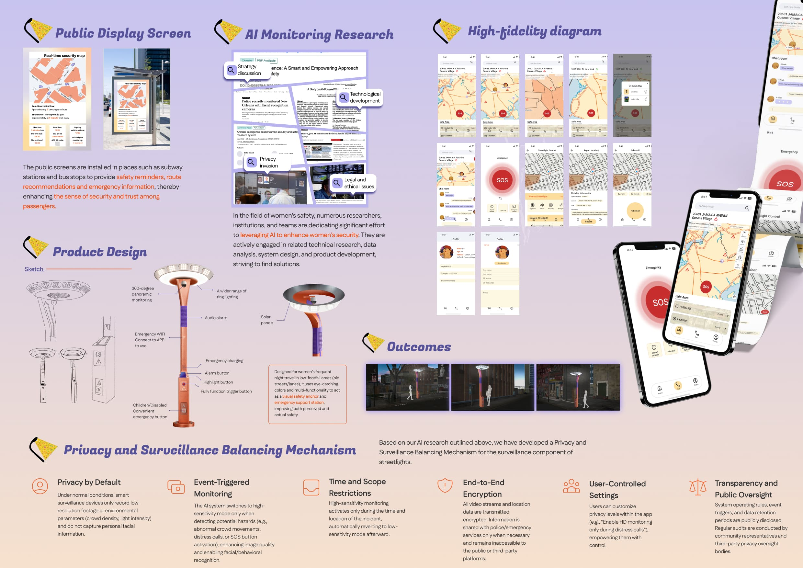

Our project explores women's nighttime safety through a smart streetlight system connected with an app and public screens. Based on research and fieldwork, the design improves visibility, emergency response, and psychological reassurance while addressing real safety risks. By balancing technology, privacy, and urban design, we aim to create safer and more inclusive cities aligned with SDG 11 and SDG 5.



